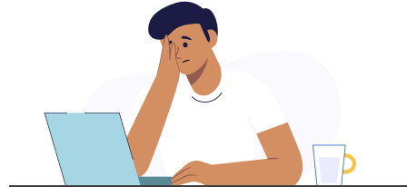
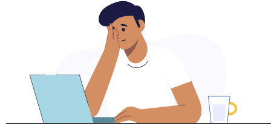
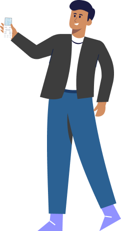
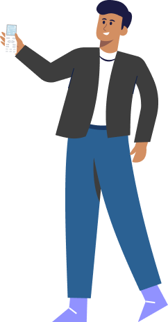

Seguem algumas dicas para conseguir de fato ter um bom conforto ac√∫stico:
- Escolha, se possível, um local silencioso, livre de distrações e com a máxima tranquilidade que a sua atividade exige. Isso, sem dúvidas, pode ser um desafio, mas, ainda assim, procure ficar longe de ruídos externos (janelas próximas de ruas movimentadas) e opte por ambientes que possam ser isolados por portas, contribuindo para manter o foco e a concentração no dia a dia.
- Se o seu espaço de trabalho contar com um ventilador ou um ar-condicionado, verifique se o ruído constante desses equipamentos não atrapalha a atividade. Ruídos contínuos acabam causando perturbação, diminuem a produtividade e podem provocar certa irritabilidade ao longo do dia. Caso precise investir na compra de um desses equipamentos, prefira equipamentos silenciosos.
- Sempre que possível, estabeleça um limite com relação ao barulho dentro de casa, com familiares ou equipamentos domésticos. Caso perca a concentração com facilidade, tente utilizar protetores auriculares para momentos que exigem grande concentração ou então utilize fones de ouvido antirruídos.
Caso o ruído dentro do ambiente de trabalho seja muito intenso, a possibilidade de troca por esquadrias com isolamento acústico pode ser uma solução pensada a longo prazo.
As soluções acústicas do ambiente podem acabar se relacionando diretamente com a estética e a percepção do espaço. Se o ambiente estiver sem decoração ou com poucos elementos decorativos, por exemplo, o espaço pode reverberar o som, causando desconforto.
Logo, o indicado é dosar o uso de itens que “absorvem” o som para que o ambiente siga confortável. Contudo, lembre-se: um ambiente com muitos elementos que absorvem o som também se torna desagradável com o tempo.
O uso de madeira, tecido, gesso, cortinas e papel de parede, pensados em combinação com a mobília e a decoração do ambiente (cadeiras, tapetes, poltronas, prateleiras), auxilia na diminuição da reverberação do som, deixando um espaço confortável acusticamente e causando bem-estar.

 


 
